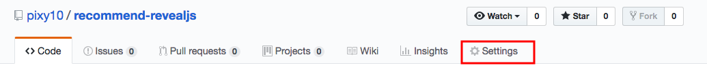
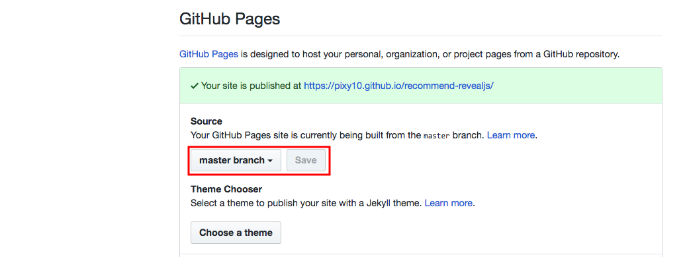

## reveal.js と github で<br>らくらくスライド生活 --- これから LT をやっていこうぜ！ --- スライド作りするか --- パワポ --- キライ 💩 --- <section> <p class="fragment grow">重い</p> <p class="fragment grow">レイアウト面倒</p> <p class="fragment grow">高機能すぎ</p> </section> --- もっと簡単に作りたい --- なんなら markdown で書きたい --- そこで --- ## reveal.js [https://revealjs.com](https://revealjs.com/#/) --- ## 作り方 - GitHubから[reveal.js](https://github.com/hakimel/reveal.js/)のプロジェクトzipをダウンロード - index.htmlをテキストエディタで開く - `<div class="slides">` タグ内の `<section>` 内容を削除 - 後述のオプション付き `<section>` を記載する - `<section>` 内にMarkdownでスライドの内容を書く --- ## section の書き方 ``` <section data-markdown data-separator="\n---\n$" data-vertical="\n--\n"> <script type="text/template"> ここにmarkdownを記載していく。 </script> </section> ``` - `data-separator="\n---\n$"` で `---` でスライド区切り - `data-vertical="\n--\n$"` で `--` で縦スライド区切り --- スライドができたら --- ## Github へ --- 公開したくないなら会社の GHE でも OK! --- ## リポジトリの設定 --- リポジトリの設定（Settings）から  --- ソースのブランチを選択して保存  --- 公開ページへアクセスするだけ --- 今見てるのがそうです！ --- 簡単でしょ！ --- qiita のスライドよりはちゃんとしたのを作りたい時にぴったり --- インターネットでどこからでもアクセス --- reveal 自体ももっと高機能なので試してみてね Github の README に色々書いてあります。 --- bye bye 😘